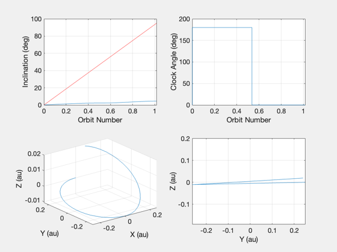
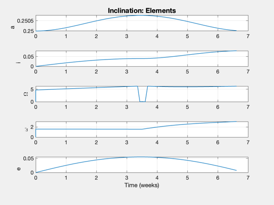

Contents
Simulate a heliocentric locally optimal trajectory.
You can simulate any one of four types. You can also change the direction, i.e. increase or decrease the element in question. This uses the control laws developed in McInnes and is designed to exactly duplicate the images in his book, Fig. 4.19, 4.20, 4.22, and 4.24, however there some inconsistencies between the sail properties listed in the text and the graphics.
Functions demonstrated: ConeClockConvention LocallyOptimalTraj FSailGuidance
The ascending node and inclination plots also shown the analytical increase expected in these elements for the given sail acceleration and orbit (red).
------------------------------------------------------------------------
Reference: Colin R. McInnes, "Solar Sailing: Technology, Dynamics and Mission
Applications", Springer Praxis, London, 1999, pp. 136-148.
------------------------------------------------------------------------
See also IConv, Constant, InformDlg, NewFig, Plot2D, TimeLabl,
UnwrapPhase, El2RV, M2Nu, Period, RV2El, RVFromKepler,
ConeClockConvention, delta, LocallyOptimalTraj, FSailGuidance
------------------------------------------------------------------------
%------------------------------------------------------------------------------- % Copyright (c) 2005 Princeton Satellite Systems, Inc. % All rights reserved. % Since version 7. %------------------------------------------------------------------------------- clear d;
USER PARAMETERS:
Possible control type examples
%------------------------------- % 1. ascending node % 2. eccentricity % 3. inclination % 4. semi-major axis % 5. Your custom elements and control (edit case below) kControlType = 3; % Direction flag: +/- 1 %---------------------- direction = 1; % Cone/Clock convention %---------------------- % 1. Cone angle kept positive % 2. Clock angle kept to [0,pi) iConv = 2; %%%%%%%%%%%%%%%%%%%%%%%%%
Set up the parameters
%---------------------- d.mu = Constant('mu sun'); acc0 = 0.3*1e-6; % 0.3 mm/s^2 converted to km/s^2 lightness = LoadingToLightness( AccelToLoading( acc0*1e3 ) )
lightness =
0.0507
Initial conditions
%------------------- au = Constant('au'); switch kControlType case 1 % Demonstrate ascending node change x0 = au/4; % start at 0.25 AU el0 = [x0;80*pi/180;0;0;0;0]; % 80 deg inclination nYears = 1.8; % 1.8 years dEl = 88.2/sin(el0(2))*beta; % analytical change case 2 % Demonstrate eccentricity change x0 = 1.25*au; el0 = [x0;0;0;0;0.2;0]; nYears = 6.67; %7.07 unconstrained, 6.65 constrained if (direction < 0) nYears = 3; end case 3 % Demonstrate inclination change x0 = au/4; el0 = [x0;0;0;pi/2;0;0]; nYears = 0.1269; if (direction < 0) el0(2) = 1.4; end dEl = 88.2*beta; case 4 % Demonstrate semi-major axis change x0 = 1.25*au; el0 = [x0;0;0;0;0.2;0]; nYears = 8.8; if (direction < 0) nYears = 2; end otherwise % Your custom elements and control selection x0 = 1*au; el0 = [x0;0.5;0;0;0;0]; nYears = 2; kControlType = 6; end [r0,v0] = El2RV( el0, [], d.mu ); x = [r0;v0];
Control details
%---------------- controlTypes = {'ascending node','eccentricity','inclination','semi-major axis','custom','constant'}; controlType = controlTypes{kControlType}; disp(' ') disp('LocalOptimalSim.') disp(['Control type selected: ' controlType]) disp(['Direction: ' num2str(direction)])
LocalOptimalSim. Control type selected: inclination Direction: 1
Integrate the trajectory
%------------------------- hDlg = InformDlg( 'Integrating...', 'LocalOptimalMission' ); odeOptions = odeset('AbsTol',1e-6,'RelTol',1e-5); [t,z] = ode113( @FSailGuidance, [0 nYears*365.25*86400], x, odeOptions,... acc0, [], [], d.mu, struct('type',controlType,'dirFlag',direction) ); nSim = length(t); close(hDlg);
Plotting array
%---------------
el = zeros(6,nSim);
angles = zeros(2,nSim);
nu = zeros(1,nSim);
tPlot = t';
xPlot = z';
Process the orbital elements
%----------------------------- r = z(:,1:3)'; v = z(:,4:6)'; for k = 1:nSim el(:,k) = RV2El( r(:,k), v(:,k), d.mu )'; [alpha, delta] = LocallyOptimalTraj( controlType, r(:,k), v(:,k), d.mu, direction ); angles(:,k) = [alpha;delta]; nu(k) = M2Nu(el(5,k),el(6,k)); end disp('Finished.')
Finished.
Plot the results
%----------------- [t, tL] = TimeLabl( tPlot ); controlType(1) = upper(controlType(1)); orbNum = tPlot/Period(x0,d.mu); [alpha,delta] = ConeClockConvention(angles(1,:),angles(2,:),iConv); switch kControlType case {4,2,6} orbNum = UnwrapPhase(nu)/(2*pi); % Semi-major axis and eccentricity [rI,vI] = RVFromKepler(el0,[],d.mu); NewFig([controlType ': Orbit and Cone Angle']); subplot(2,2,1); plot(orbNum,el(1,:)/au); ylabel('Semi-major axis (au)'); xlabel('Orbit Number') grid on subplot(2,2,2); plot(orbNum,el(5,:)); ylabel('Eccentricity'); xlabel('Orbit Number') grid on subplot(2,2,3); plot(orbNum,angles(1,:)*180/pi); ylabel('Pitch angle (deg)'); xlabel('Orbit Number') grid on subplot(2,2,4); plot(xPlot(1,:)/au, xPlot(2,:)/au); grid on hold on plot(rI(1,:)/au, rI(2,:)/au, '--'); xlabel('x (au)'); ylabel('y (au)') axis equal Plot2D(orbNum,[alpha;delta],'Orbit Number',{'\alpha' '\delta'},[controlType ': Angles']) case {1,3} % Analytical increase (deg/orbit) del = dEl*orbNum; NewFig([controlType ': Orbit and Clock Angle']); elk = [3 0 2]; lbl = {'Ascending Node (deg)' ' ' 'Inclination (deg)'}; subplot(2,2,1); plot(orbNum,el(elk(kControlType),:)*180/pi); hold on; plot(orbNum,del,'r'); ylabel(lbl{kControlType}); xlabel('Orbit Number') grid on subplot(2,2,2); [alpha2,delta2] = ConeClockConvention(angles(1,:),angles(2,:),1); plot(orbNum,delta2*180/pi); ylabel('Clock Angle (deg)'); xlabel('Orbit Number') grid on subplot(2,2,3); plot3(xPlot(1,:)/au,xPlot(2,:)/au,xPlot(3,:)/au); xlabel('X (au)'); ylabel('Y (au)'); zlabel('Z (au)'); grid on subplot(2,2,4); plot(xPlot(2,:)/au, xPlot(3,:)/au); xlabel('Y (au)'); ylabel('Z (au)'); grid on axis equal Plot2D(t,[el(1,:)/au;el(2:5,:)],tL,{'a' 'i' '\Omega' '\omega' 'e'},[controlType ': Elements']) end %-------------------------------------- % PSS internal file version information %-------------------------------------- % $Id: 6fd74833975a58611dac2fd4eee38cd063d93547 $ 